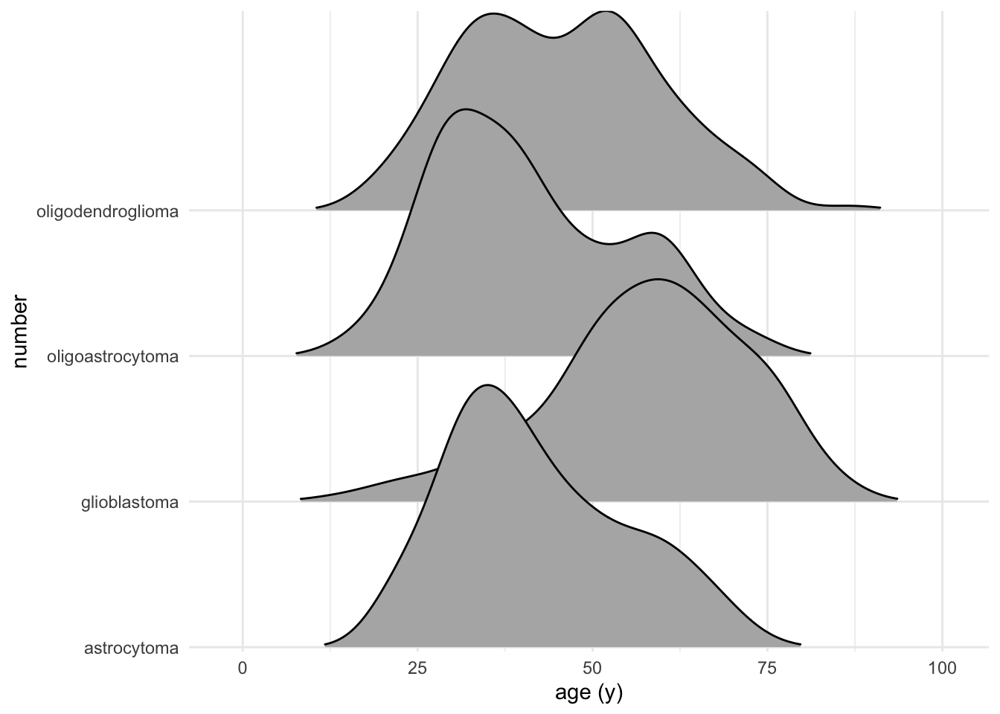

Chapter 18 More modeling
library(tidyverse)
library(caret)## Loading required package: lattice##
## Attaching package: 'caret'## The following object is masked from 'package:purrr':
##
## lift18.1 glmnet models
glmnet is an extension of glm models with built-in variable selection, which could be really nice for pituitary adenoma classification purposes.
glmnet helps deal with colinearity (correlation between predictors in a model) and small samples, both of which are relevant to my pituitary adenoma data.
glmnet relies on two forms of regression:
- Lasso regression, which penalizes the number of nonzero coefficients
- Ridge regression, which penalizes the absolute magnitude of the coefficients
- Both sorts of regression can be combined
glmnet attempst to find a simple model with few nonzero coefficients or small absolute magnitude of coefficients.
glmnet pairs well with random forest models, since it often yields different results.
18.1.1 Parameters for tuning glmnet models
alpha(0,1): pure ridge at zero, pure lasso at onelambda(0,infinity): size of the penalty
For a single value of alpha, glmnet fits all values of lambda simultaneously. This is “many models for the price of one.” This is known as the “submodel trick.”
Zach Mayer uses a dataset that I can’t seem to locate, so I’ll switch the terms somewhat and hazard using iris and a three-class problem, which may be outside of the scope of this code.
It may be that the example below is too wonky to salvage. See https://neurospection.netlify.app/post/machine-learning-basics-with-caret/#a-classification-example for some nice examples of machine learning from readily available datasets.
18.1.2 An iris example of glmnet
myControl <- trainControl(
method = "cv",
number = 10,
summaryFunction = multiClassSummary,
classProbs = TRUE,
verboseIter = TRUE
)
set.seed(42)
model <- train(
Species ~ .,
iris,
method = "glmnet",
trControl = myControl
)## + Fold01: alpha=0.10, lambda=0.087
## - Fold01: alpha=0.10, lambda=0.087
## + Fold01: alpha=0.55, lambda=0.087
## - Fold01: alpha=0.55, lambda=0.087
## + Fold01: alpha=1.00, lambda=0.087
## - Fold01: alpha=1.00, lambda=0.087
## + Fold02: alpha=0.10, lambda=0.087
## - Fold02: alpha=0.10, lambda=0.087
## + Fold02: alpha=0.55, lambda=0.087
## - Fold02: alpha=0.55, lambda=0.087
## + Fold02: alpha=1.00, lambda=0.087
## - Fold02: alpha=1.00, lambda=0.087
## + Fold03: alpha=0.10, lambda=0.087
## - Fold03: alpha=0.10, lambda=0.087
## + Fold03: alpha=0.55, lambda=0.087
## - Fold03: alpha=0.55, lambda=0.087
## + Fold03: alpha=1.00, lambda=0.087
## - Fold03: alpha=1.00, lambda=0.087
## + Fold04: alpha=0.10, lambda=0.087
## - Fold04: alpha=0.10, lambda=0.087
## + Fold04: alpha=0.55, lambda=0.087
## - Fold04: alpha=0.55, lambda=0.087
## + Fold04: alpha=1.00, lambda=0.087
## - Fold04: alpha=1.00, lambda=0.087
## + Fold05: alpha=0.10, lambda=0.087
## - Fold05: alpha=0.10, lambda=0.087
## + Fold05: alpha=0.55, lambda=0.087
## - Fold05: alpha=0.55, lambda=0.087
## + Fold05: alpha=1.00, lambda=0.087
## - Fold05: alpha=1.00, lambda=0.087
## + Fold06: alpha=0.10, lambda=0.087
## - Fold06: alpha=0.10, lambda=0.087
## + Fold06: alpha=0.55, lambda=0.087
## - Fold06: alpha=0.55, lambda=0.087
## + Fold06: alpha=1.00, lambda=0.087
## - Fold06: alpha=1.00, lambda=0.087
## + Fold07: alpha=0.10, lambda=0.087
## - Fold07: alpha=0.10, lambda=0.087
## + Fold07: alpha=0.55, lambda=0.087
## - Fold07: alpha=0.55, lambda=0.087
## + Fold07: alpha=1.00, lambda=0.087
## - Fold07: alpha=1.00, lambda=0.087
## + Fold08: alpha=0.10, lambda=0.087
## - Fold08: alpha=0.10, lambda=0.087
## + Fold08: alpha=0.55, lambda=0.087
## - Fold08: alpha=0.55, lambda=0.087
## + Fold08: alpha=1.00, lambda=0.087
## - Fold08: alpha=1.00, lambda=0.087
## + Fold09: alpha=0.10, lambda=0.087
## - Fold09: alpha=0.10, lambda=0.087
## + Fold09: alpha=0.55, lambda=0.087
## - Fold09: alpha=0.55, lambda=0.087
## + Fold09: alpha=1.00, lambda=0.087
## - Fold09: alpha=1.00, lambda=0.087
## + Fold10: alpha=0.10, lambda=0.087
## - Fold10: alpha=0.10, lambda=0.087
## + Fold10: alpha=0.55, lambda=0.087
## - Fold10: alpha=0.55, lambda=0.087
## + Fold10: alpha=1.00, lambda=0.087
## - Fold10: alpha=1.00, lambda=0.087
## Aggregating results
## Selecting tuning parameters
## Fitting alpha = 0.1, lambda = 0.00087 on full training setplot(model)
18.1.3 Now using a tuning grid
# Train glmnet with custom trainControl and tuning: model
model <- train(
Species~.,
iris,
tuneGrid = expand.grid(
alpha=0:1,
lambda=seq(0.0001, 1, length=20)
),
method = "glmnet",
trControl = myControl
)## + Fold01: alpha=0, lambda=1
## - Fold01: alpha=0, lambda=1
## + Fold01: alpha=1, lambda=1
## - Fold01: alpha=1, lambda=1
## + Fold02: alpha=0, lambda=1
## - Fold02: alpha=0, lambda=1
## + Fold02: alpha=1, lambda=1
## - Fold02: alpha=1, lambda=1
## + Fold03: alpha=0, lambda=1
## - Fold03: alpha=0, lambda=1
## + Fold03: alpha=1, lambda=1
## - Fold03: alpha=1, lambda=1
## + Fold04: alpha=0, lambda=1
## - Fold04: alpha=0, lambda=1
## + Fold04: alpha=1, lambda=1
## - Fold04: alpha=1, lambda=1
## + Fold05: alpha=0, lambda=1
## - Fold05: alpha=0, lambda=1
## + Fold05: alpha=1, lambda=1
## - Fold05: alpha=1, lambda=1
## + Fold06: alpha=0, lambda=1
## - Fold06: alpha=0, lambda=1
## + Fold06: alpha=1, lambda=1
## - Fold06: alpha=1, lambda=1
## + Fold07: alpha=0, lambda=1
## - Fold07: alpha=0, lambda=1
## + Fold07: alpha=1, lambda=1
## - Fold07: alpha=1, lambda=1
## + Fold08: alpha=0, lambda=1
## - Fold08: alpha=0, lambda=1
## + Fold08: alpha=1, lambda=1
## - Fold08: alpha=1, lambda=1
## + Fold09: alpha=0, lambda=1
## - Fold09: alpha=0, lambda=1
## + Fold09: alpha=1, lambda=1
## - Fold09: alpha=1, lambda=1
## + Fold10: alpha=0, lambda=1
## - Fold10: alpha=0, lambda=1
## + Fold10: alpha=1, lambda=1
## - Fold10: alpha=1, lambda=1## Warning in nominalTrainWorkflow(x = x, y = y, wts = weights, info = trainInfo, :
## There were missing values in resampled performance measures.## Aggregating results
## Selecting tuning parameters
## Fitting alpha = 1, lambda = 1e-04 on full training set# Print model to console
model## glmnet
##
## 150 samples
## 4 predictor
## 3 classes: 'setosa', 'versicolor', 'virginica'
##
## No pre-processing
## Resampling: Cross-Validated (10 fold)
## Summary of sample sizes: 135, 135, 135, 135, 135, 135, ...
## Resampling results across tuning parameters:
##
## alpha lambda logLoss AUC prAUC Accuracy Kappa
## 0 0.00010000 0.2898235 0.9840000 0.7720675 0.9466667 0.92
## 0 0.05272632 0.3103255 0.9813333 0.7689193 0.9400000 0.91
## 0 0.10535263 0.3869141 0.9746667 0.7548003 0.9000000 0.85
## 0 0.15797895 0.4339693 0.9733333 0.7530146 0.8933333 0.84
## 0 0.21060526 0.4691696 0.9686667 0.7450423 0.8800000 0.82
## 0 0.26323158 0.4978133 0.9646667 0.7398069 0.8866667 0.83
## 0 0.31585789 0.5224857 0.9626667 0.7349735 0.8866667 0.83
## 0 0.36848421 0.5443413 0.9606667 0.7324405 0.8866667 0.83
## 0 0.42111053 0.5636618 0.9586667 0.7290688 0.8800000 0.82
## 0 0.47373684 0.5813573 0.9566667 0.7270608 0.8866667 0.83
## 0 0.52636316 0.5976174 0.9553333 0.7232275 0.8866667 0.83
## 0 0.57898947 0.6125953 0.9546667 0.7221720 0.8866667 0.83
## 0 0.63161579 0.6264585 0.9540000 0.7206720 0.8800000 0.82
## 0 0.68424211 0.6393783 0.9533333 0.7178942 0.8733333 0.81
## 0 0.73686842 0.6515223 0.9520000 0.7147460 0.8666667 0.80
## 0 0.78949474 0.6630493 0.9526667 0.7153611 0.8666667 0.80
## 0 0.84212105 0.6738165 0.9513333 0.7163770 0.8666667 0.80
## 0 0.89474737 0.6838840 0.9506667 0.7159074 0.8666667 0.80
## 0 0.94737368 0.6936799 0.9500000 0.7152923 0.8666667 0.80
## 0 1.00000000 0.7027300 0.9500000 0.7152923 0.8666667 0.80
## 1 0.00010000 0.1382981 0.9986667 0.7779365 0.9733333 0.96
## 1 0.05272632 0.3089767 0.9846667 0.7744352 0.9400000 0.91
## 1 0.10535263 0.4678077 0.9806667 0.7662566 0.9466667 0.92
## 1 0.15797895 0.5932540 0.9720000 0.7525939 0.9333333 0.90
## 1 0.21060526 0.6990309 0.9313333 0.6962725 0.8733333 0.81
## 1 0.26323158 0.8007242 0.8440000 0.6365370 0.8333333 0.75
## 1 0.31585789 0.8940441 0.8326667 0.6101402 0.7000000 0.55
## 1 0.36848421 0.9784211 0.8333333 0.5974735 0.6666667 0.50
## 1 0.42111053 1.0720286 0.8333333 0.5974735 0.6666667 0.50
## 1 0.47373684 1.0986123 0.5000000 0.0000000 0.3333333 0.00
## 1 0.52636316 1.0986123 0.5000000 0.0000000 0.3333333 0.00
## 1 0.57898947 1.0986123 0.5000000 0.0000000 0.3333333 0.00
## 1 0.63161579 1.0986123 0.5000000 0.0000000 0.3333333 0.00
## 1 0.68424211 1.0986123 0.5000000 0.0000000 0.3333333 0.00
## 1 0.73686842 1.0986123 0.5000000 0.0000000 0.3333333 0.00
## 1 0.78949474 1.0986123 0.5000000 0.0000000 0.3333333 0.00
## 1 0.84212105 1.0986123 0.5000000 0.0000000 0.3333333 0.00
## 1 0.89474737 1.0986123 0.5000000 0.0000000 0.3333333 0.00
## 1 0.94737368 1.0986123 0.5000000 0.0000000 0.3333333 0.00
## 1 1.00000000 1.0986123 0.5000000 0.0000000 0.3333333 0.00
## Mean_F1 Mean_Sensitivity Mean_Specificity Mean_Pos_Pred_Value
## 0.9459764 0.9466667 0.9733333 0.9526984
## 0.9393771 0.9400000 0.9700000 0.9449206
## 0.8989562 0.9000000 0.9500000 0.9049206
## 0.8913805 0.8933333 0.9466667 0.8989683
## 0.8776599 0.8800000 0.9400000 0.8878571
## 0.8842593 0.8866667 0.9433333 0.8956349
## 0.8842593 0.8866667 0.9433333 0.8956349
## 0.8842593 0.8866667 0.9433333 0.8956349
## 0.8753284 0.8800000 0.9400000 0.8950397
## 0.8829041 0.8866667 0.9433333 0.9009921
## 0.8829041 0.8866667 0.9433333 0.9009921
## 0.8829041 0.8866667 0.9433333 0.9009921
## 0.8761701 0.8800000 0.9400000 0.8954365
## 0.8685944 0.8733333 0.9366667 0.8894841
## 0.8614395 0.8666667 0.9333333 0.8855159
## 0.8614395 0.8666667 0.9333333 0.8855159
## 0.8614395 0.8666667 0.9333333 0.8855159
## 0.8614395 0.8666667 0.9333333 0.8855159
## 0.8614395 0.8666667 0.9333333 0.8855159
## 0.8614395 0.8666667 0.9333333 0.8855159
## 0.9730640 0.9733333 0.9866667 0.9777778
## 0.9388215 0.9400000 0.9700000 0.9487302
## 0.9459764 0.9466667 0.9733333 0.9526984
## 0.9323737 0.9333333 0.9666667 0.9410317
## 0.8635198 0.8733333 0.9366667 0.9017857
## 0.8155955 0.8333333 0.9166667 0.8810185
## 0.7476597 0.7000000 0.8500000 0.8672840
## NaN 0.6666667 0.8333333 NaN
## NaN 0.6666667 0.8333333 NaN
## NaN 0.3333333 0.6666667 NaN
## NaN 0.3333333 0.6666667 NaN
## NaN 0.3333333 0.6666667 NaN
## NaN 0.3333333 0.6666667 NaN
## NaN 0.3333333 0.6666667 NaN
## NaN 0.3333333 0.6666667 NaN
## NaN 0.3333333 0.6666667 NaN
## NaN 0.3333333 0.6666667 NaN
## NaN 0.3333333 0.6666667 NaN
## NaN 0.3333333 0.6666667 NaN
## NaN 0.3333333 0.6666667 NaN
## Mean_Neg_Pred_Value Mean_Precision Mean_Recall Mean_Detection_Rate
## 0.9750505 0.9526984 0.9466667 0.3155556
## 0.9714141 0.9449206 0.9400000 0.3133333
## 0.9519192 0.9049206 0.9000000 0.3000000
## 0.9491835 0.8989683 0.8933333 0.2977778
## 0.9429545 0.8878571 0.8800000 0.2933333
## 0.9465909 0.8956349 0.8866667 0.2955556
## 0.9465909 0.8956349 0.8866667 0.2955556
## 0.9465909 0.8956349 0.8866667 0.2955556
## 0.9454222 0.8950397 0.8800000 0.2933333
## 0.9481579 0.9009921 0.8866667 0.2955556
## 0.9481579 0.9009921 0.8866667 0.2955556
## 0.9481579 0.9009921 0.8866667 0.2955556
## 0.9451276 0.8954365 0.8800000 0.2933333
## 0.9423919 0.8894841 0.8733333 0.2911111
## 0.9398666 0.8855159 0.8666667 0.2888889
## 0.9398666 0.8855159 0.8666667 0.2888889
## 0.9398666 0.8855159 0.8666667 0.2888889
## 0.9398666 0.8855159 0.8666667 0.2888889
## 0.9398666 0.8855159 0.8666667 0.2888889
## 0.9398666 0.8855159 0.8666667 0.2888889
## 0.9878788 0.9777778 0.9733333 0.3244444
## 0.9725253 0.9487302 0.9400000 0.3133333
## 0.9750505 0.9526984 0.9466667 0.3155556
## 0.9689226 0.9410317 0.9333333 0.3111111
## 0.9466631 0.9017857 0.8733333 0.2911111
## 0.9328657 0.8810185 0.8333333 0.2777778
## 0.8973138 0.8672840 0.7000000 0.2333333
## 0.8888889 NaN 0.6666667 0.2222222
## 0.8888889 NaN 0.6666667 0.2222222
## NaN NaN 0.3333333 0.1111111
## NaN NaN 0.3333333 0.1111111
## NaN NaN 0.3333333 0.1111111
## NaN NaN 0.3333333 0.1111111
## NaN NaN 0.3333333 0.1111111
## NaN NaN 0.3333333 0.1111111
## NaN NaN 0.3333333 0.1111111
## NaN NaN 0.3333333 0.1111111
## NaN NaN 0.3333333 0.1111111
## NaN NaN 0.3333333 0.1111111
## NaN NaN 0.3333333 0.1111111
## Mean_Balanced_Accuracy
## 0.960
## 0.955
## 0.925
## 0.920
## 0.910
## 0.915
## 0.915
## 0.915
## 0.910
## 0.915
## 0.915
## 0.915
## 0.910
## 0.905
## 0.900
## 0.900
## 0.900
## 0.900
## 0.900
## 0.900
## 0.980
## 0.955
## 0.960
## 0.950
## 0.905
## 0.875
## 0.775
## 0.750
## 0.750
## 0.500
## 0.500
## 0.500
## 0.500
## 0.500
## 0.500
## 0.500
## 0.500
## 0.500
## 0.500
## 0.500
##
## Accuracy was used to select the optimal model using the largest value.
## The final values used for the model were alpha = 1 and lambda = 1e-04.# Print maximum ROC statistic
# max(model[["results"]][["ROC"]])
# this doesn't work with 3 target classes18.2 Imputation discussion
18.3 Split target from predictors
This example shows how to generate some missing values, and to use imputation overcome these.
data("mtcars")
set.seed(42)
mtcars[sample(1:nrow(mtcars), 10), "hp"] <- NA
Y <- mtcars$mpg
X <- mtcars[,2:4]
# model <- train(X,Y) #This fails, because of the NAs. Try imputation.
median_model <- train(
X,
Y,
preProcess = "medianImpute"
)## note: only 2 unique complexity parameters in default grid. Truncating the grid to 2 .print(median_model)## Random Forest
##
## 32 samples
## 3 predictor
##
## Pre-processing: median imputation (3)
## Resampling: Bootstrapped (25 reps)
## Summary of sample sizes: 32, 32, 32, 32, 32, 32, ...
## Resampling results across tuning parameters:
##
## mtry RMSE Rsquared MAE
## 2 2.758439 0.8106146 2.260273
## 3 2.729423 0.8123802 2.224138
##
## RMSE was used to select the optimal model using the smallest value.
## The final value used for the model was mtry = 3.18.4 Multiple preprocessing methods
Zach Mayer offers the following cheat sheet for preprocessing:
- Start with median imputation (if you’re using it)
- Try KNN imputation if data NOT missing at random
- For linear models (lm, glm, glmnet) always center and scale
- Tree-based models (random forest, gbm) don’t need much preprocessing
data("mtcars")
set.seed(42)
mtcars[sample(1:nrow(mtcars), 10), "hp"] <- NA
Y <- mtcars$mpg
X <- mtcars[,2:4] # missing at random
set.seed(42)
model <- train(
X,
Y,
method = "glm",
preProcess = c("medianImpute", "center", "scale")
)
print(min(model$results$RMSE))## [1] 3.079732set.seed(42)
model <- train(
X,
Y,
method = "glm",
preProcess = c("medianImpute", "center", "scale", "pca")
)
print(min(model$results$RMSE)) # with pca applied## [1] 3.0358118.5 Max Kuhn on reusing a trainControl
library(C50)
library(modeldata)
data(mlc_churn)
set.seed(1)
inTrainingSet <- createDataPartition(mlc_churn$churn,
p = 0.75,
list = FALSE)
churnTrain <- mlc_churn[inTrainingSet,]
churnTest <- mlc_churn[-inTrainingSet,]
glimpse(churnTrain)## Rows: 3,751
## Columns: 20
## $ state <fct> KS, NJ, OH, MA, LA, IN, RI, IA, IA, NY, …
## $ account_length <int> 128, 137, 84, 121, 117, 65, 74, 168, 62,…
## $ area_code <fct> area_code_415, area_code_415, area_code_…
## $ international_plan <fct> no, no, yes, no, no, no, no, no, no, no,…
## $ voice_mail_plan <fct> yes, no, no, yes, no, no, no, no, no, no…
## $ number_vmail_messages <int> 25, 0, 0, 24, 0, 0, 0, 0, 0, 0, 27, 0, 0…
## $ total_day_minutes <dbl> 265.1, 243.4, 299.4, 218.2, 184.5, 129.1…
## $ total_day_calls <int> 110, 114, 71, 88, 97, 137, 127, 96, 70, …
## $ total_day_charge <dbl> 45.07, 41.38, 50.90, 37.09, 31.37, 21.95…
## $ total_eve_minutes <dbl> 197.4, 121.2, 61.9, 348.5, 351.6, 228.5,…
## $ total_eve_calls <int> 99, 110, 88, 108, 80, 83, 148, 71, 76, 9…
## $ total_eve_charge <dbl> 16.78, 10.30, 5.26, 29.62, 29.89, 19.42,…
## $ total_night_minutes <dbl> 244.7, 162.6, 196.9, 212.6, 215.8, 208.8…
## $ total_night_calls <int> 91, 104, 89, 118, 90, 111, 94, 128, 99, …
## $ total_night_charge <dbl> 11.01, 7.32, 8.86, 9.57, 9.71, 9.40, 8.8…
## $ total_intl_minutes <dbl> 10.0, 12.2, 6.6, 7.5, 8.7, 12.7, 9.1, 11…
## $ total_intl_calls <int> 3, 5, 7, 7, 4, 6, 5, 2, 6, 9, 4, 3, 2, 4…
## $ total_intl_charge <dbl> 2.70, 3.29, 1.78, 2.03, 2.35, 3.43, 2.46…
## $ number_customer_service_calls <int> 1, 0, 2, 3, 1, 4, 0, 1, 4, 4, 1, 3, 1, 0…
## $ churn <fct> no, no, no, no, no, yes, no, no, no, yes…glimpse(churnTest)## Rows: 1,249
## Columns: 20
## $ state <fct> OH, OK, AL, MO, WV, MT, VA, AZ, SC, WY, …
## $ account_length <int> 107, 75, 118, 147, 141, 95, 76, 130, 111…
## $ area_code <fct> area_code_415, area_code_415, area_code_…
## $ international_plan <fct> no, yes, yes, yes, yes, no, no, no, no, …
## $ voice_mail_plan <fct> yes, no, no, no, yes, no, yes, no, no, y…
## $ number_vmail_messages <int> 26, 0, 0, 0, 37, 0, 33, 0, 0, 39, 33, 0,…
## $ total_day_minutes <dbl> 161.6, 166.7, 223.4, 157.0, 258.6, 156.6…
## $ total_day_calls <int> 123, 113, 98, 79, 84, 88, 66, 112, 103, …
## $ total_day_charge <dbl> 27.47, 28.34, 37.98, 26.69, 43.96, 26.62…
## $ total_eve_minutes <dbl> 195.5, 148.3, 220.6, 103.1, 222.0, 247.6…
## $ total_eve_calls <int> 103, 122, 101, 94, 111, 75, 65, 99, 102,…
## $ total_eve_charge <dbl> 16.62, 12.61, 18.75, 8.76, 18.87, 21.05,…
## $ total_night_minutes <dbl> 254.4, 186.9, 203.9, 211.8, 326.4, 192.3…
## $ total_night_calls <int> 103, 121, 118, 96, 97, 115, 108, 78, 105…
## $ total_night_charge <dbl> 11.45, 8.41, 9.18, 9.53, 14.69, 8.65, 7.…
## $ total_intl_minutes <dbl> 13.7, 10.1, 6.3, 7.1, 11.2, 12.3, 10.0, …
## $ total_intl_calls <int> 3, 3, 6, 6, 5, 5, 5, 19, 6, 3, 6, 2, 5, …
## $ total_intl_charge <dbl> 3.70, 2.73, 1.70, 1.92, 3.02, 3.32, 2.70…
## $ number_customer_service_calls <int> 1, 3, 0, 0, 0, 3, 1, 0, 2, 0, 3, 3, 3, 3…
## $ churn <fct> no, no, no, no, no, no, no, no, no, no, …table(churnTrain$churn/nrow(churnTrain))## Warning in Ops.factor(churnTrain$churn, nrow(churnTrain)): '/' not meaningful
## for factors## < table of extent 0 >